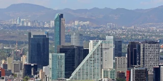

Ciudad de México
Mexico City
19.4326° N, 99.1332° W

Ciudad de México, Estados Unidos Mexicanos
Mexico City, Mexico
Alejandro Islas Photograph AC -
https://www.flickr.com/photos/99299995@N02/9355469268/
,
CC BY 2.0
,
Link
Palacio de Bellas Artes
Palace of Fine Arts
Xavier Quetzalcoatl Contreras Castillo
-
Own work
,
CC BY-SA 3.0
,
Link
Basílica de Nuestra Señora de Guadalupe
Basilica of Our Lady of Guadalupe
Sebastian Wallroth,
CC BY 3.0
,
Link
Zócalo
Zócalo
Uwebart
-
Own work
,
CC BY-SA 3.0
,
Link
Castillo de Chapultepec
Chapultepec Castle
Arturo Chavez
-
Own work
,
CC BY-SA 3.0
,
Link